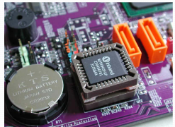

1. PCle 2.0 x4 tiene un ancho de banda de 2GB/s en cada sentido.
2. Una memoria quad-ranked puede tener hasta 4 rangos.
3.
En un test
ANOVA, si F_{exp} es mayor que el grado de significatividad concluiremos que el factor tiene un efecto significativo en la variable respuesta.4. ¿Para qué tipo de microprocesadores se diseña un chipset?
5. En la jerarquía de memoria de un computador, la memoria LLC tiene menor latencia que la DRAM.
6. SAS es capaz de gestionar múltiples dispositivos desde un solo puerto.
7. Las memorias de los PCs tienen ECC, a diferencia de las de los servidores.
8. ¿Qué tipo de conectores de expansión se observan en la placa? 
9. ¿Qué codificación utiliza SATA para la transmisión de datos?
10. Las LR-DIMM se utilizan para caché de altas prestaciones en servidores.
11. Señala las opciones correctas en base al PCI-Express.
12.
¿Para qué se usa
sar -e?13. ¿Qué es la fiabilidad en el contexto de sistemas informáticos?
14. \(R_0 = V_1 \cdot R_1 \cdot V_2 \cdot R_2\)
15. Con “sar -P 1” puedo conocer la utilización del segundo núcleo lógico de CPU.
16. ¿De que tipo es el zócalo de la imagen?

17. SATA y SAS tienen el mismo tipo de conector y la misma velocidad máxima.
18. Los paneles traseros de placas de servidores suelen tener conectores de audio y video de altas prestaciones.
19.
MIPS es una medida de rendimiento fiable: si un equipo presenta valor mayor de MIPS que otro, rendirá mejor en todos los programas.20. AMD ofrece los procesadores EPYC para el mercado de sobremesa y los OPTERON para el de servidores.
21. Si el servidor A es el doble de rápido que el servidor B para todos los programas de un benchmark cuyo rendimiento se calcula según el criterio SPEC, entonces ese índice SPEC del servidor A será mayor que el del servidor B, independientemente de la máquina de referencia elegida.
22. La transmisión de información entre un módulo de memoria de tipo DDR4 y la CPU es half-duplex.
23.
¿Qué representa el campo 
in? 24. ¿Cuál es una ventaja principal de NVMe frente a SATA?
25. Las memorias de tipo U-DIMM, al carecer de buffer/registro interno, son las que permiten albergar la mayor cantidad de memoria por módulo.
26. Conforme aumenta la generación de memorias DDR aumenta el ancho de banda y disminuye el voltaje.
27.
¿Qué muestra
sar -n?28. ¿Qué significa las siglas PCI?
29. La anchura de entrada de un monitor es la frecuencia máxima de la ocurrencia de los eventos.
30.
En Linux, la información a la que se accede a través de
/proc está almacenada realmente en la RAM.31. ¿Qué significa la sigla MTBF?
32. NCQ (Native Command Queuing) es una extensión de SATA concebida especialmente para optimizar el acceso a unidades de estado sólido.
33. Señala las correctas
34. En la monitorización de un servidor durante un tiempo \(T\), \(C_0\) no puede ser mayor que \(A_0\).
35. Los monitores de actividad por muestreo muestran informacion exacta
36. La placa base de la figura tiene al menos dos conectores mini-SAS:

37. La razón media de visita de un dispositivo tiene qué ser necesariamente un número entero no negativo.
38. Los discos SAS suelen ser más fiables y resistentes para uso continuo.
39. ¿Para qué tipo de equipos están pensados los módulos LR-DIMM?
40. Una fuente de alimentación convierte corriente continua en corriente alterna para usarla en la placa base.
41. ¿Qué función principal tiene la ROM/Flash BIOS?
42. En el servidor modelado mediante una red abierta la tasa de llegada no puede superar \(\frac{1}{D_b}\)
43. Si aplicamos la ley de Little a cada cola de una estación de servicio obtenemos que: \(V_i = X_i \cdot S_i\)
44. \(R_i=W_i+Q_i\), para todo \(i=106..K\)
45. Las memorias con ECC se usan para aumentar la disponibilidad de un servidor.
46. ¿Qué significa la sigla MTTF en el contexto de fiabilidad?
47. ¿Qué caracteriza al almacenamiento permanente (no volátil)?
48. ¿Cuál de las siguientes afirmaciones es correcta respecto a las interfaces serie con reloj embebido?
49. AMD ofrece los procesadores EPYC para el mercado de servidores y los Ryzen para el de sobremesa.
50. SO-DIMM tiene un menor número de contactos que DIMM.
51. ¿Cuántas ranuras de memoria RAM DDR3/DDR4 se observan en la placa?
52. ¿Qué significa la sigla FIT en el contexto de fiabilidad?
53. Si lanzo dos dados (sin truncar) muchas veces, la media de la diferencia entre los valores de sus lanzamientos debería tender a 0.
54. Los protocolos de comunicación serie pueden ser half-duplex.
55. ¿Qué tipo de conector utiliza NVMe en formato M.2?
56. Los conectores de la placa base de la figura podrían ser de tipo SATA.
57. PCI-X es una versión de PCI-Express.
58. \(S_i = \frac{C_i}{B_i}\)
59. SAS es full-duplex.
60. ¿Qué tipo de bus utiliza la interfaz P-ATA?
61. ¿Qué característica tiene USB 2.0?
62. La pila que hay en la placa base sirve, entre otras cosas, para tener el reloj en tiempo real de dicha placa actualizado.
63. ¿Qué figura es la de la imagen? 
64.
Si
NT >> NT* el servidor está saturado (para colas cerradas).65. El uso de Cloud Computing y de la virtualización facilita el diseño de servidores escalables.
66. EPYC es un procesador de Intel.
67.
/proc se usa para consultar información sobre procesos en ejecución.68. Un monitor por eventos no siempre da información exacta.
69. Xeon es una familia de microprocesadores de IBM especialmente dirigida a los servidores.
70. Todos los protocolos de comunicación serie son full-duplex.
71. Intel Core es la familia de microprocesadores de Intel especializada en PC.
72. ¿Qué tipo de conector utiliza NVMe en formato U.2?
73. Ultra-SCSI soporta Full-Duplex.
74. Selecciona las opciones correctas en base a los conectores mini-SAS.
75. ¿Qué diferencia principal existe entre U-DIMM y EU-DIMM?
76. El índice SPEC premia mejoras sustanciales con respecto a algún programa del benchmark y no castiga al mismo nivel los empeoramientos.
77. Si aplicamos la ley de Little a los usuarios en reflexión de una red de colas cerrada Interactiva, podemos relacionar el número medio de usuarios en reflexión con la productividad media del servidor y el tiempo medio de reflexión de dichos usuarios.
78. La placa base de la figura tiene una ranura PCI y 4 PCIe:
79. Un microprocesador puede acceder a la vez a dos módulos de memoria del banco de distintos canales.
80. ¿Cuántas ranuras para memoria RAM DDR tiene esta placa base?
81. A través del System Panel (o Front Panel) se puede conectar un dispositivo USB del chasis a la placa base.
82.
En Linux, el profiler
gprof utiliza monitorización por muestreo para estimar el tiempo de CPU que consume cada función de nuestro programa escrito en C.83. PCle 5.0 usa codificación 8b/10b.
84. Señala las opciones correctas sobre el PCI.
85. El zócalo de la figura es LGA.

86. LR-DIMM es el tipo de módulo que permite mayor capacidad por ranura.
87. En los benchmarks TPC-C y TPC-H, el índice de prestaciones se calcula a partir de la media geométrica de las ganancias en velocidad con respecto a una máquina de referencia.
88. Las placas de servidores suelen tener un conector VGA en el panel trasero.
89. \(W_i = N_i \cdot S_i\) es una ley válida para servidores modelados mediante una red de colas abierta en equilibrio de flujo.
90. Un módulo de DRAM con chips en ambas caras no tiene por qué ser de doble rango (dual ranked).
91. No solo se puede conectar una tarjeta PCIe 2.0 en una ranura PCIe 5.0 de la placa base, sino que también se puede conectar una tarjeta PCIe 5.0 en una ranura PCle 2.0 de la placa base.
92. Para diagnosticar que una memoria RAM funciona correctamente debemos utilizar un benchmark específico para memorias RAM.
93. ¿Qué significan las siglas del método USE en monitorización de sistemas?
94. El primer procesador con un conjunto de instrucciones de 64 bits lo diseñó AMD en el año 2003.
95. Puedo conectar una tarjeta PCIe 2.0 en un conector PCIe 4.0 de la placa base, pero no al revés.
96. En un análisis estadístico como el de t Student, si el \(p-value\) es menor que el nivel de significatividad (alpha), entonces podemos rechazar la hipótesis nula.
97.
El conjunto de instrucciones
POST se encuentra en la ROM.98. Una memoria dual-ranked puede tener hasta 2 rangos.
99. La "S" del acrónimo SRAM es por Static.
100. ¿Qué tipo de comunicación utiliza SATA?
101. ¿Qué es un chipset en la placa base?
102. ¿Qué caracteriza a las unidades de cinta (tape drives)?
103. ¿Qué longitud máxima de cable permite SAS?
104. ¿Qué es el cuello de botella en un sistema informático?
105. Podemos mejorar la escalabilidad de un servidor utilizando RAID 1.
106. En saturación, el cuello de botella está al máximo de su productividad.
107. ¿Qué tipo de comunicación utiliza USB 3.0 y USB 3.1/3.2?
108. La expresión \(U_i = X_i \cdot S_i\) solo es válida si el servidor no está saturado.
109.
sar es un monitor software por eventos.110. PCIe 5.0 utiliza codificación 128b/130b para mejorar la eficiencia del enlace.
111. Señala la opción correcta o las opciones correctas:
112. ¿Cuántas colas de peticiones de E/S permite NVMe en paralelo?
113. Señale las opciones correctas:
114. Las frecuencias de los procesadores se han estabilizado desde la primera década del siglo XXI.
115. ¿Que significa las siglas POWER?
116. Señala las respuestas que son correctas.
117. Tanto PCI como PCIe definen un protocolo de comunicación serie punto a punto.
118. SO-DIMM es un tipo de memoria pensada para servidores.
119. USB 3.0 es Full-duplex
120. ¿Qué significa la sigla ATA en el contexto de P-ATA?
121. SATA es más barato que SAS y adecuado para la mayoría de usuarios domésticos.
122.
Si
NT >> NT* el servidor dejará de estar en equilibrio de flujo (para el caso de redes de colas abiertas).123. El índice SPEC premia mejoras sustanciales con respecto a algún programa del benchmark y si castiga al mismo nivel los empeoramientos.
124. Decimos que un módulo de DRAM tiene dos rangos si tiene chips por las dos caras (dualranked).
125. ¿Cuál es la principal característica de la arquitectura cliente/servidor?
126. Un servidor blade es menos complejo que un rack.
127. MTTF significa Mean Time To Failure.
128. La interfaz SATA permite conectar un único dispositivo por canal.
129. ¿Qué función tiene la pila en la placa base?
130. El protocolo USB 2.0 es half-duplex.
131.
¿Para qué sirve
sar -A?132.
¿Qué indica la primera línea de la salida de
vmstat? 133. ¿Para qué se utilizan normalmente las unidades de cinta?
134. La placa base de la figura solo admite una CPU y 4 DIMM de memoria RAM dinámica.

135. Con un conector mini SAS de la placa base puedo conectar 4 discos SATA.
136.
¿Qué hace
sar -b?137. En un servidor, si la demanda de servicio de un dispositivo es menor que la de otro, su utilización nunca podrá ser mayor que la de ese otro dispositivo.
138. ¿Qué ventaja ofrece el acceso aleatorio en las SSD?
139. El conector de la figura proviene de una fuente de alimentación.

140.
gprof basa su información en lo que obtiene leyendo de /proc.141. Si añado una nueva CPU a nuestro servidor, el tiempo mínimo medio de respuesta del servidor seguro que aumenta.
142.
¿Qué representan los campos
si y so? 143. Un zócalo PGA tiene agujeritos para que entren las patillas del procesador.
144. La razón media de visita de un dispositivo no tiene por qué ser necesariamente un número entero no negativo.
145. Una máquina con un SPEC menor de 1 significa que es más rápida que la máquina de referencia.
146. Podemos aumentar la escalabilidad de un servidor añadiendo fuentes de alimentación redundantes.
147. ¿Qué significan las siglas sar?
148. La demanda media de servicio de un dispositivo en el seno de un servidor nunca puede ser menor que su tiempo medio de servicio.
149. SSD procede de las siglas "Solid State Disk":
150. Los discos SAS pueden conectarse a controladores SATA sin ningún adaptador.
151. ¿Qué es un sistema empotrado?
152. ¿Cuál es la fórmula correcta de la sobrecarga?
$$\text{Sobrecarga}_{\text{Recurso}}(\%)=\frac{\text{Uso del recurso por parte del monitor}}{\text{Capacidad media del recurso}}\times 1$$
$$\text{Sobrecarga}_{\text{Recurso}}(\%)=\frac{\text{Uso del recurso por parte del monitor}}{\text{Capacidad total del recurso}}\times 100$$
$$\text{Sobrecarga}_{\text{Monitor}}(\%)=\frac{\text{Uso del recurso por parte del monitor}}{\text{Capacidad total del recurso}}\times 100$$
$$\text{Sobrecarga}_{\text{Recurso}}(\%)=\frac{\text{Uso del recurso por parte del monitor}}{\text{Tiempo de uso del recurso}}\times 100$$
153. El puente sur del chipset se encarga de las líneas de PCIe x16.
154. Con "almacenamiento permanente" queremos indicar que el dispositivo es de solo lectura y que el dato se va a quedar escrito en el dispositivo de forma permanente.
155. Los procesadores Opteron son los procesadores de Intel para servidores.
156. ¿Qué caracteriza a las unidades ópticas?
157. SAS permite transferencias en ambos sentidos simultáneamente.
158. Si un servidor siempre responde a nuestras peticiones podemos decir que es un servidor de alta fiabilidad.
159. El resultado de un benchmark siempre se expresa como el tiempo necesario para ejecutar una cantidad pre-establecida de tareas.
160. El fenómeno llamado "timing skew" motivó la aparición de protocolos de comunicación paralelos como P-ATA (también llamado IDE) o PCI.
161. ¿Qué tipo de comunicación utiliza SAS?
162. ¿Qué tipo de comunicación utiliza P-ATA?
163. Un módulo de DRAM DDR4 con ECC 2Rx4 tiene 36 chips.
164. La interfaz Serial ATA es compatible con SAS. Dicho de otra manera, si tengo una placa con conectores Serial ATA voy a poder pinchar en ella unidades SAS.
165. ¿Qué es un "hot spot" en el contexto de sistemas informáticos?
166. ¿Qué tipo de comunicación utiliza USB 2.0?
167. Frotándose las manos se elimina la electricidad estática.
168. ¿Qué característica distingue a USB respecto a otros estándares de conexión?
169. La exactitud de un sensor se refiere esencialmente a cómo se aproximan las medidas que toma al valor verdadero.
170. ¿Qué tipo de conexión utiliza SCSI?
171. Selecciona los tipos de inactividad:
172. La memoria caché L3 se comparte por todos los cores de un microprocesador.
173. El conjunto de instrucciones que ejecutan el auto-test de arranque (Power On self-test) se encuentran almacenadas en las primeras direcciones de la DRAM.
174. Las unidades SSD tienen mayor latencia que los discos duros debido a que no tienen que esperar a que el cabezal se posicione sobre la pista a leer/escribir.
175. ¿Qué significa la sigla AFR en el contexto de fiabilidad?
176. ¿Qué característica distingue a SATA respecto a P-ATA?
177.
Si ejecutamos la línea
sar -d en un servidor con sar instalado, muestra estadísticas de actividad de disco por dispositivo.178. R-DIMM permite módulos de mayor tamaño que EU-DIMM, aunque con más latencia.
179. ¿Cuál de los siguientes es un ejemplo de fallo software?
180. Las latencias de las unidades de cinta suelen ser muy bajas ya que hay que rebobinar la cinta hasta que el cabezal se encuentre en la posición deseada.
181. ¿Cuál es la distancia máxima permitida por la interfaz P-ATA?
182. Es posible conectar unidades de almacenamiento con interfaz SATA a una placa base con conectores SAS.
183. ¿Cuál es la capacidad máxima de almacenamiento de un disco Blu-ray?
184. Es el propio microprocesador en muchos computadores actuales el que realiza la función de puente norte del chipset.
185.
Un módulo de DRAM DDR4 con ECC 2Rx4 tiene 16 chips, debido a que como se tiene 2 ranks, donde cada chip aporta 4 bits/chip, sabiendo que un módulo DDR tiene 32 bits, por rank nos queda que
32/4 = 8 chips/rank, al tener dos rank nos queda 16.186. Con "sar -u", sin más argumentos, iremos obteniendo la información de la utilización global del procesador desde el momento actual en adelante.
187. SATA alcanza mayores velocidades que SAS en sus versiones actuales.
188. Whetstone está diseñado para medir el rendimiento de operaciones en coma flotante, funciones matemáticas, llamadas a procedimientos, etc.
189. Señala la afirmación correcta:
190.
¿Qué analiza
sar -d?191. ¿Qué tipos de conexión a la placa base son correctos para almacenamiento permanente?
192. \(\sum\limits_{i=1}^k R_i = R_0\)
193. Tanto las SRAM como las DRAM son volátiles, pero solo las DRAM necesitan refresco.
194. ¿Cuántos dispositivos se pueden conectar por cada conector P-ATA?
195. La hipótesis inicial de un test t es que los rendimientos de ambas alternativas a analizar son estadísticamente iguales.
196. Linpack y Dhrystone miden el rendimiento de operaciones con coma flotante, mientras que Whetstone mide el rendimiento de operaciones con enteros.
197.
sar no solo mide párametros relativos a CPU, sino que es una herramienta muy completa.198. ¿Cómo se configuran la mayoría de los parámetros de la placa base?
199. La hipótesis inicial de un test t es que los rendimientos de ambas alternativas a analizar son estadísticamente diferentes.
200. Un disco SAS usa un único conector que unifica tanto los cables de alimentación procedentes de la fuente de alimentación como los de datos, procedentes de la placa base.
201. El módulo regulador de voltaje, entre otras cosas, convierte la corriente alterna en corriente continua.
202. Un servidor que siempre me da respuesta, pero que a veces me da respuestas incorrectas, tiene una disponibilidad del 100%.
203. ¿Qué información aporta un profiler?
204. Todos los sistemas escalables son extensibles, pero no a la inversa.
205. SATA-3 usa codificación 128b/130b.
206. ¿Qué significa las siglas AGP en el contexto de sistemas informáticos?
207. Los procesadores AMD Opteron Serie A están basados en microprocesadores de ARM.
208. \(Z=N_z\cdot R_0\)
209. Uno de los inconvenientes de utilizar la media aritmética de los tiempos de ejecución de los benchmark es que su valor dependerá de la máquina de referencia que se escoja.
210. Los SSDs están hechos de condensadores.
211. ¿Qué caracteriza a los discos duros (HDD)?
212. A la hora de escoger un servidor ateniéndonos únicamente al valor de la relación prestaciones/coste, es mejor escoger la versión con un valor numérico mayor.
213. Los procesadores para servidores suelen tener más canales de memoria que los de PC en la misma generación.
214. ¿Qué tipo de comunicaciones son correctas?
215. Una fuente de alimentación convierte corriente alterna en corriente continua para usarla en la placa base.
216. U-DIMM también se conoce como Unbuffered DIMM y se usa en PC y portátiles.
217. EU-DIMM y R-DIMM se pueden usar indistintamente en cualquier PC de sobremesa.
218. Con "carga del sistema", el S.O. Linux se refiere al número de procesos en modo running, runnable o I/0 blocked.
219. Puedo colocar una PCIe x16 en una x4 pero no al revés.
220. ¿Cuáles son los tipos de almacenamiento permanente vistos en clase?
221.
sar solo mide párametros relativos a CPU222. Al bajar el grado de significatividad, es más difícil conseguir que el \(p-value < \alpha\).
223. Con un benchmark especializado en DRAM puedo diagnosticar el correcto funcionamiento de un módulo de DRAM.
224.
Elige la imagen que corresponda a
P-ATA.
225. AHCI es una interfaz diseñada para facilitar la conexión de SSD a través de PCIe.
226. Es la media aritmética y no el índice SPEC el que nos ayuda a saber qué computadora ejecuta el conjunto total de programas de un benchmark en menos tiempo.
227. El puente norte del chipset se encarga de las líneas de PCIe x16.
228. ¿Qué son los jumpers en la placa base?
229. ¿Qué ventaja o ventajas ofrece una interfaz serie con reloj embebido respecto a una paralela con reloj común?
230. ¿Cuáles son los tipos de medios ópticos más comunes?
231. En un test t, el p-value equivale esencialmente a la probabilidad de que la hipótesis nula sea falsa.
232.
sar es un monitor software por sondeo.233. ¿Qué módulos de memoria suelen incluir ECC?
234. SO-DIMM tiene menos contactos y se utiliza en equipos portátiles.
235. Intel Xeon es la familia de microprocesadores de Intel especializada en servidores.
236. La frecuencia de reloj de las CPU sigue todavía incrementándose de forma exponencial con los años.
237. El zócalo para CPU de la figura es de tipo LGA.
238. ¿Qué función tiene el puente norte (north bridge) del chipset?
239. La versión serie del interfaz SCSI se llama SAS, cuyas siglas provienen de "Serial Attached SCSI".
240. La ganancia en velocidad siempre es un número comprendido entre 0 y 2, ambos inclusive.
241. ¿Qué significa la sigla USB?
242. A diferencia de R-DIMM, LR-DIMM almacena solo las señales de control, no los datos.
243. ¿Cuál es la principal característica de los módulos SO-DIMM?
244. Xeon es una familia de microprocesadores de Intel especialmente dirigida a los servidores.
245. Existen servidores con fuentes de alimentación reemplazables en caliente (hot swappable).
246. Un disco duro SATA sí puede conectarse a un controlador SAS.
247. Si añadimos una segunda CPU a nuestro servidor, idéntica a la ya existente, es razonable suponer que la razón media de visita de la primera CPU se va a dividir por dos.
248.
¿Qué muestra el campo
cs? 249. Una memoria DRAM necesita refresco porque es volátil.
250.
¿Qué función cumple
sar -w?251. Un SSD con MLC es más fiable que uno SLC.
252. Una red de colas abierta se puede considerar un caso particular de red de colas cerrada si hacemos que \(Z = 0s\).
253.
La hipótesis de partida de un test
ANOVA es que el factor que se está estudiando influye en el rendimiento.254. SAS es más utilizado en entornos domésticos por su bajo coste.
255. ¿Qué característica principal se puede observar sobre los sockets de CPU?
256. LINPACK mide el rendimiento en cálculos numéricos intensivos, especialmente operaciones con coma flotante (ej. álgebra lineal).
257. Soc quiere decir System on chip.
258. Todos los sistemas extensibles son escalables, pero no a la inversa.
259. ¿Qué tipo de conexión utiliza NVMe para acceder a las SSD?
260. AHCI posee \(Hot plug\) y es una interfaz de software que permite al sistema operativo comunicarse con discos SATA.
261. La transmisión de información entre un módulo de memoria de tipo DDR4 y la CPU es full-duplex.
262. Señala las opciones correctas en base a la interfaz AGP.
263. ¿Cuáles son los factores de forma más utilizados en almacenamiento permanente?
264. Un microprocesador puede acceder a la vez a dos módulos de memoria del banco de un mismo canal.
265. Si un servidor web ha recibido una media de 10 visitas por segundo, entonces la razón media de visita del servidor es 10 tr/s.
266. ¿Qué protocolo utiliza SATA para mejorar el rendimiento?
267. La ROM tiene el código para instalar los drivers que se usarán por el SO para funcionar normalmente.
268.
Si ejecutamos la línea
sar -d en un servidor con sar instalado, iremos obteniendo información sobre las transferencias de cada disco del servidor de forma interactiva.269. ¿Qué se ve en la imagen? 
270. Las unidades de estado sólido (SSD) son capaces de alcanzar anchos de banda superiores a los que el protocolo SATA-3 puede proporcionar.
271. La placa base de la figura tiene 4 ranuras PCIe y 6 conectores SATA.
272. eDonkey es un ejemplo de Arquitectura Cliente/Servidor de varios niveles.
273. La precisión de un sensor está relacionada con la dispersión de las medidas que realiza.
274.
sar al igual que top es un monitor software por eventos.275. Con un conector SATA de la placa base puedo conectar 4 discos mini SAS.
276. ¿Qué tipo de módulo de memoria es más común en PC y portátiles?
277. El conjunto de instrucciones que ejecutan el auto-test de arranque (Power On self-test) se encuentran almacenadas en la ROM/Flash BIOS de la placa.
278. La versión serie de SCSI se llama SAS, también conocida como NGFF.
279. Un microbenchmark también suele denominarse benchmark de sistema completo.
280.
¿Qué función tiene
sar -f?281. ¿Qué capacidad de almacenamiento pueden alcanzar las unidades de cinta actualmente?
282. ¿Qué tipo de conexión utiliza USB?
283. ¿Qué ancho de banda máximo (Mbps) puede alcanzar un disco Blu-ray?
284. En redes de colas cerradas el número total de transiciones entre estaciones por unidad de tiempo permanece constante, por lo que siempre se está en equilibrio.
285. El voltaje que usa un módulo DDR4 es menor que el de un módulo DDR3.
286. SPECrate, a diferencia de SPECspeed, mide cuántos programas se ejecutan por unidad de tiempo.
287. En un servidor modelado mediante una red de colas se cumple que \(B_i = (N_i-Q_i) \cdot T\).
288. ¿Qué caracteriza a la escalabilidad horizontal?
289.
gprof da información estimada (no exacta) del tiempo de ejecución de cada función de un programa instrumentado por esta herramienta.290.
En un test
ANOVA, si F_{exp} es mayor que el grado de significatividad concluiremos que no podemos decir que el factor a considerar influya en la variable respuesta.291. El puente sur del chipset es el encargado de las transferencias entre el puente norte y el resto de periféricos con menores exigencias de velocidad de la placa.
292. Cada LANE de PCIe está formada por 4 cables.
293. EPYC es una familia de procesadores de AMD para servidores.
294. Si \(\sum\limits_{i=1}^{K} U_i > 1\) el servidor está saturado.
Falso
Si \( U_i > 1 \), el servidor está saturado.
295. Los chips de la serie AMD Opteron X son SoC.
296. Un SSD con MLC es menos fiable que uno SLC.
297. Si una interfaz es Plug and Play podemos cambiar el componente en caliente (sin reiniciar).
298. Señala las respuestas que son correctas.
299. Las tarjetas que usaban las ranuras ISA tenían que ser pre-configuradas para asignarles la interrupción que correspondía a cada una.
300.
sar es un monitor software por muestreo.301. En una red abierta en equilibrio de flujo se cumple que \(R_0 = R_1 + R_2 + \dots + R_K\), siendo \(K\) el número de estaciones de servicio de nuestro modelo.
302. ¿Qué tipo de conexión utiliza la interfaz Serial-ATA (SATA)?
303. Los paneles traseros de placas de servidores suelen tener conectores de audio y video de bajas prestaciones y los de red de altas prestaciones.
304.
¿Qué muestra el comando
vmstat principalmente? 305. Las pistas en una placa base están normalmente hechas de cobre rodeadas de láminas de un substrato no conductor.
306.
¿Qué indica la opción
-u en el comando sar?307. El puente sur del chipset se encarga de las líneas de PCIe x1 o x4.
308. PCI soporta Hot Plugging.
309. Los VGA de un servidor son de altas prestaciones.
310. Con "sar -u", sin más argumentos, iremos obteniendo la información de la utilización global del procesador desde el último arranque o a comienzos del día.
311. Las memorias de tipo LR-DIMM, gracias a su diseño con búfer y registros internos, son las que permiten albergar la mayor cantidad de memoria por módulo.
312. La placa base de la figura admite hasta dos microprocesadores y un máximo de cuatro DIMM de memoria RAM dinámica en total.:
313. ¿Qué se entiende por ajuste o sintonización en un sistema?
314. El microbenchmark SPEC CPU 2017 mide las prestaciones de CPU, sistema de memoria y de compilador (C, C++, Fortran).
315. En los paneles traseros de las placas de servidores los conectores de red son de bajas prestaciones.
316. Time skew es un protocolo de comunicación paralelo.
317. Un microprocesador puede acceder simultáneamente a 2 módulos de memoria DRAM solo si están en canales diferentes.
318. Puedo conectar una tarjeta PCIe 2.0 en un conector PCIe 4.0 de la placa base, pero no al revés.
319. El puente sur del chipset se encarga de la comunicación con la DRAM
320. \(\lambda_i = \frac{Q_i}{W_i}\)
321. ¿Cuál es la función principal de un SAS Expander?
322. ¿Cuántos zócalos para CPU (sockets) se pueden ver?
323. Jugando con las distintas configuraciones de un RAID se puede conseguir más fiabilidad o más disponibilidad, pero no mayores prestaciones.
324. ¿Cuáles son las versiones de ATA estudiadas?
325. Si la ganancia en velocidad (speedup o aceleración) entre dos servidores para un determinado programa es mayor que \(0\), es razonable concluir que uno de los servidores es más rápido que el otro para ese programa.
326. ¿En qué parte del código pasa la mayor parte de su tiempo de ejecución?
327. ¿Qué característica tiene USB 3.1 y USB 3.2?
328. La productividad de un servidor nunca podrá ser superior a \(\frac{1}{D}\).
329. SO-DIMM es un tipo de memoria pensada para servidores.
330. Decimos que un servidor es fiable si se encuentra en estado operativo.
331.
El conjunto de instrucciones
POST se encuentra en la RAM.332.
Un módulo de DRAM DDR4 con ECC 2Rx4 tiene 36 chips, debido a que como se tiene 2 ranks, donde cada chip aporta 4 bits/chip, sabiendo que un módulo DDR tiene 64 bits, por rank nos queda que
64/4 = 16 chips/rank, al tener dos rank nos queda 32.333. Ultra-SCSI no soporta Full-Duplex.
334.
¿Qué evalúa
sar -r?335. Cada LANE de PCIe está formada por 2 cables.
336. R-DIMM no incluye corrección de errores ECC.
337.
La carga de sistema en Linux, que se muestra en
uptime, entre otros comandos, está formada únicamente por los procesos en estado running y runnable.338. ¿Que es la figura de la imagen?

339. ¿Qué característica distingue a los módulos R-DIMM respecto a EU-DIMM?
340. ¿Cuáles son las velocidades de transferencia máximas de las versiones de ATA?
341. Cuando nos referimos al índice de prestaciones que se calcula según el benchmark SPEC CPU2017, el SPEC pico (peak) nunca puede ser menor que el SPEC base.
342. El indice SPEC no tiene unidades.
343. Llamamos "rango" (rank) a un bloque lógico de chips que trabajan en paralelo para formar una palabra de datos completa.
344. ¿Qué tareas realiza el programa almacenado en la ROM/Flash BIOS?
345. En el panel trasero de la placa base de un servidor es habitual encontrar varios conectores para Ethernet.
346. Un servidor blade es más complejo que un rack.
347.
¿Qué muestra
sar -I?348. SSD procede de las siglas "Solid State Drive":
349. La ley de Little establece que el número promedio de clientes en un sistema estacionario es igual a la tasa promedio de llegada multiplicada por el tiempo promedio que pasa en el sistema y es válida si está en equilibrio de flujo.
350. ¿Qué significa el término "Plug and Play" en el contexto de sistemas informáticos?
351. ¿Qué codificación utiliza SAS para la transmisión de datos?
352. ¿Cómo se distribuyen los datos en un disco duro?
353. ¿Cuál es una desventaja de las unidades de cinta?
354. Una ganancia (speedup) negativa quiere decir que la mejora aplicada ha empeorado el tiempo original.
355. \(\sum\limits_{i=1}^k R_i \times V_i = R_0\)
356. PCIe permite la conexión serie punto a punto, una comunicación de tipo full-duplex y la conexión de dispositivos en caliente.
357. Las principales medidas de prestaciones de un servidor se basan en tiempos de respuesta (o latencias) y en productividades (o anchos de banda).
358. ¿Cuál es la intensidad de recarga de dispositivos en USB 3.1 y USB 3.2?
359. En un call graph, las flechas indican el número de veces que una función llama a otra. Este número siempre es entero.
360. Señala las características correctas de "Plug and Play":
361. En una arquitectura cliente/servidor de tres niveles, ¿qué función cumple el tercer nivel?
362. ¿Cuántos puertos Ethernet se ven en el panel trasero?
363. La utilidad principal de las unidades de cinta en servidores es para almacenamiento de respaldo (backup) y archivado.
364. Los procesadores Intel Core i7 están especialmente diseñados para placas con dos o más zócalos de CPU.
365. ¿De que tipo es el zócalo de la imagen?

366. NVMe es un protocolo para conectar dispositivos SSD por PCIe.
367. Dhrystone mide el rendimiento en operaciones de tipo entero, cadenas, estructuras de control y llamadas a funciones. No evalúa bien el rendimiento en coma flotante.
368. ¿Qué mide el tiempo de respuesta (latencia) en un servidor?
369. Si reemplazamos un dispositivo por otro el doble de rápido, su razón de visita será menor.
370. Un monitor por eventos siempre da información exacta.
371. La expresión \(Q_i = \lambda_i\cdot W_i \) es válida, aunque el servidor esté saturado.
372. ¿Cuál de las siguientes opciones es un ejemplo de productividad (throughput) en un servidor?
373. ¿Qué caracteriza a las unidades de estado sólido (SSD)?
374. ¿Qué significa la sigla SCSI?
375. PCIe es retrocompatible y compatible hacia delante.
376. ¿Que es la figura de la imagen?

377.
Medir los
MIPS es un buen índice de rendimiento.378. Tanto R-DIMM como LR-DIMM incorporan ECC.
379. Si el servidor A es un \(20\%\) más rápido que el servidor B en ejecutar un determinado programa de benchmark, entonces podemos decir igualmente que el servidor B es un \(20\%\) más lento que el servidor A en ejecutar dicho programa de benchmark.
380. ¿Cuál es el papel del servidor en la arquitectura cliente-cola-cliente?
381. ¿Qué tecnología se utiliza en las SSD para almacenar datos?
382. ¿Dónde se almacenan los parámetros de configuración de la placa?
383. \(N_0 = \sum\limits_{i=1}^K V_i \times N_i \)
384. ¿Cuál es la longitud máxima del cable en la interfaz SATA?
385. Una de las líneas del protocolo PCIe se usa en exclusiva para transmitir la señal de reloj.
386. ¿Cuáles son las frecuencias de operación de SAS?
387. Un zócalo PGA tiene patillas para que se conecte el procesador.
388. ¿Cuántos bancos de VRM/disipadores principales hay en la placa?
389. ¿Cuál de las siguientes acciones puede mejorar el rendimiento de un sistema?
390. La expresión \(N_0 = X_0 \cdot R_0\) solo es válida si el servidor no está saturado.
391. ¿Qué es la escalabilidad en un sistema informático?
392. Las pistas de una placa base están hechas de una resina no conductora y no inflamable.
393. ¿Qué factores pueden afectar a las prestaciones de un sistema?
394. ¿Qué característica distingue a NVMe respecto a otros protocolos de almacenamiento?
395. Decimos que un módulo de DRAM tiene dos rangos si internamente agrupa los chips en dos bloques lógicos que acceden por separado.
396. PCle 2.0 x4 tiene un ancho de banda de 4GB/s en cada sentido.
397. ¿Qué ventaja ofrece la arquitectura cliente/servidor de varios niveles?
398. ¿Cuál de las siguientes características suele estar asociada a los sistemas empotrados?
399. La latencia es la cantidad de trabajo de un equipo, es decir, el número de trabajos completados entre el tiempo dedicado.
400. ¿Cuáles son las velocidades reales de transferencia en SATA III?
401. ¿Cuál de los siguientes es un ejemplo de fallo físico permanente?
402. ¿Qué característica distingue a SAS respecto a SCSI?
403. ¿Cuántos conectores SATA para discos duros/SSD se identifican?
404.
¿Qué permite la opción
-s?405.
¿Para qué sirve la opción
-P en sar?406. ¿Cuántas ranuras PCI Express aparecen en la imagen?
407. ¿Qué significan las siglas sadc?
408. ¿Qué ventaja ofrecen los SAS Expanders en sistemas de almacenamiento?
409.
gprof da información exacta (no estimada) del tiempo de ejecución de cada función de un programa instrumentado por esta herramienta.410. ¿Qué tipo de aplicaciones suelen usar la arquitectura cliente-cola-cliente?
411. PCle 2.0 x4 tiene un ancho de banda de 6GB/s en cada sentido.
412.
¿Qué significan
bi y bo en vmstat? 413. Señala las clasificaciones de los sistemas informáticos según su uso:
414. ¿Qué tipos de celdas son habituales en las SSD?
415. El número medio de trabajos en un servidor es la suma de los números medios de trabajos en cada uno de sus componentes.
416. El primer procesador con un conjunto de instrucciones de 64 bits lo diseñó AMD a principios de los 2000.
417. Una celda SRAM tiene más componentes electrónicos (condensadores, transistores...) que una DRAM.
418. Puedo conectar un disco SATA usando el controlador SAS de la placa, pero no un disco SAS usando el controlador SATA de la placa.
419. El tiempo de respuesta medio de un servidor es la suma de los tiempos de respuesta de las estaciones de servicio.
420.
¿Qué hace
sar -R?421. ¿Qué afecta a los tiempos de respuesta (latencias) en un disco duro?
422. En SoC nos podemos comunicar directamente con la memoria RAM.
423. Cuando comparamos tiempos de ejecución, expresados en segundos, de programas ejecutados en servidores utilizando el test t, el estadístico \(t_{exp}\) también se puede expresar en segundos.
424. Las latencias de las unidades de cinta suelen ser muy altas ya que hay que rebobinar la cinta hasta que el cabezal se encuentre en la posición deseada.
425.
¿Para qué sirve el campo
r en la salida de vmstat? 426. Cuando nos referimos al método USE para la monitorización del rendimiento de un servidor, la “S” de USE viene de “Saturation”.
427.
Si
NT >> NT* el servidor dejará de estar en equilibrio de flujo (para el caso de redes de colas cerradas).428. La carga de un sistema se puede definir como el conjunto de tareas que ha de realizar.
429. ¿Qué tipo de conexión utiliza SAS?
430. El p-value es la **probabilidad de obtener un resultado igual o más extremo que el observado, asumiendo que la hipótesis nula es cierta.
431. La familia AMD Opteron X Series usa microprocesadores de ARM.
432. La placa base de la figura admite un único microprocesador y 4 módulos de memoria DRAM.
433. ¿Qué tipo de conector utiliza NVMe en formato tarjeta?
434. En un test t, a mayor nivel de confianza es más fácil rechazar la hipótesis de que ambas alternativas son iguales.
435. El puente norte del chipset es el que se encarga de las transferencias de alta velocidad.
436. \(R_i=W_i+S_i\), para todo \(i=111..K\)
437.
En
gprof la columna self de cada función incluye el tiempo de código propio (incluyendo el tiempo que tardan sus hijos en ejecutarse).438. ¿Para qué sirve el puente sur (south bridge) del chipset?
439. ¿Qué función cumplen los disipadores de aluminio negro sobre la placa?
440. Señala cuáles son sinónimos:
441. EU-DIMM incorpora corrección de errores (ECC) y se usa en entornos domésticos.
442. La placa base de la figura tiene 2 ranuras PCI, 3 PCIe y 6 conectores SATA.
443.
Elige la imagen que corresponda a
SATA.444. Con “sar -P 1” puedo conocer el estado del proceso con id=1.
445.
Si el número total de usuarios en un servidor modelado mediante una red de colas cerrada interactiva es superior a
NT*, entonces el servidor está saturado.446. ¿Qué significa la sigla NVMe?
447. Llamamos "rango" a cada una de las caras de un módulo de memoria RAM.
448. \(N_0 = \sum\limits_{i=1}^n N_i\)
449. La precisión de un sensor se refiere esencialmente a cómo se aproximan las medidas que toma al valor verdadero.
450. ¿Qué caracteriza a un fallo físico temporal?
451. A través del "System Panel" se puede conectar el altavoz del chasis a la placa base.
452. ¿Qué característica tiene USB 3.0?
453. La cola/pasta térmica es un aislante que evita que el calor salga de la CPU.
454. Un mismo servidor, según su tipo de carga puede tener distintos cuellos de botella.
455. En una placa base de un PC es habitual encontrar tanto conectores SATA como SAS.
456. La versión serie de SCSI se llama M2, también conocida como NGFF.
457. Si añado una nueva CPU a nuestro servidor, el tiempo mínimo medio de respuesta del servidor seguro que disminuye.
458. La celda básica de una SRAM es mayor que la de una DRAM.
459. ¿Qué caracteriza a la escalabilidad vertical?
460. Con la Ley de Amdahl podemos estimar la ganancia en velocidad de la ejecución un único trabajo (un hilo) en un computador después de mejorar k veces un componente.
461. ¿Qué característica tiene Ultra-SCSI?
462. Actuando sobre el elemento con mayor razón de visita nos garantizamos mejorar la productividad máxima de un servidor.
463. ¿Qué es el "timing skew" en el contexto de interfaces paralelas?
464. ¿Cuál de las siguientes NO es una solución para mejorar la escalabilidad?
465. En un test t, el \(p-value\) obtenido depende del nivel de confianza seleccionado.
466. \(C_0\) es un valor puntual calculado al comienzo del período \(T\)
467. En una red de colas cerrada interactiva se cumple que: \(N_T = X_0^{max} \cdot (R_0^{min} + Z)\)
468.
¿Qué muestra la opción
-q?469. ¿Qué significan las siglas vmstat?
470. EPYC es un procesador de AMD.
471. ¿Cuál de las siguientes afirmaciones es correcta respecto a sistemas escalables y extensibles?
472. ¿Qué función cumple la política de planificación de procesos en el sistema operativo?
473. La "S" del acrónimo SRAM es por Synchronous.
474. La expresión \(N_i=X_i\cdot R_i\) solo es válida si el servidor está saturado.
475. ¿Cómo se realiza la lectura y escritura en un disco duro?
476. ¿Cuál es la principal ventaja de los módulos LR-DIMM frente a los R-DIMM?
477. Una memoria dual-ranked puede tener hasta 4 rangos.
478. Las prestaciones de un servidor no se ven afectadas por la configuración de la memoria virtual.
479. \(C_0\) es un valor medio calculado durante el periodo de monitorización \(T\)
480. ¿Cuáles son las velocidades de rotación más habituales en los discos duros?
481. ¿Qué función cumple el controlador en las SSD?
482. ¿Cuál es la velocidad máxima de transferencia en SAS-4?
483. Soc quiere decir System on carry.